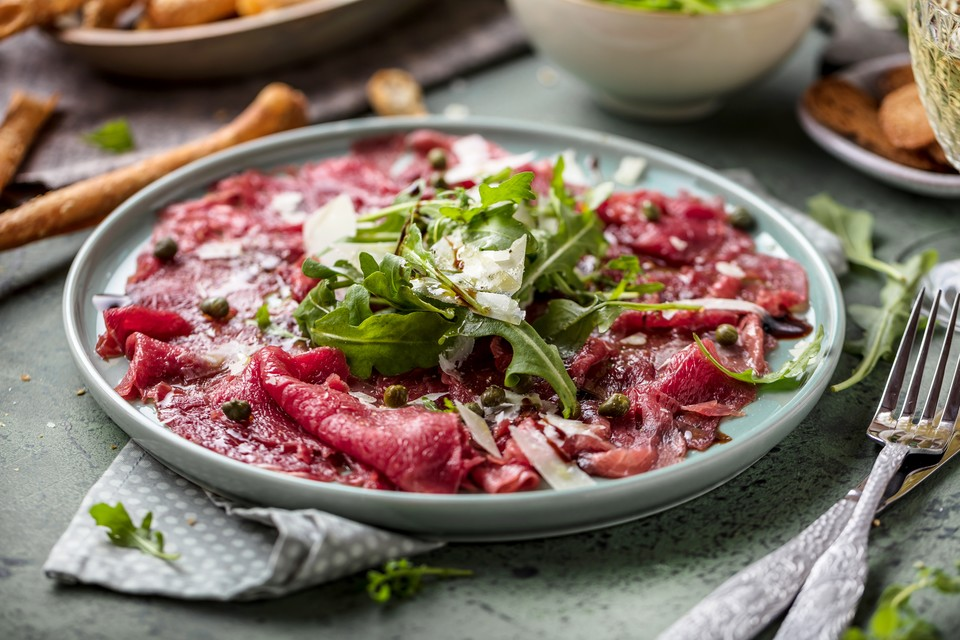

Klassieke carpaccio
Het ideale voorgerecht op een mooie zomerdag.
Ingredienten
- 1 theelepel balsamicoazijn
- 3 eetlepels citronsap
- 2 el olijfolie
- zout
- versgemalen peper
- 400 gram ossenhaas
- 75 g rucola
- 30 gram pijnboompitten
- 30 gram geraspte Parmezaanse kaas
Bereidingswijze
- Meng de azijn, citroensap en olie met een lepel door elkaar en breng op smaak met zout en peper.
- Snijd de ossenhaas in dunne plakjes
- Rooster de pijnboompitten in een droge koekenpan en breng de rucola opsmaak met de dressing
- Verdeel de sla over borden en leg de carpaccio er op. Bestrooi met de pijnboompitten en enkele blaadjes rucola. Breng op smaak met peper en Parmezaanse kaas.
